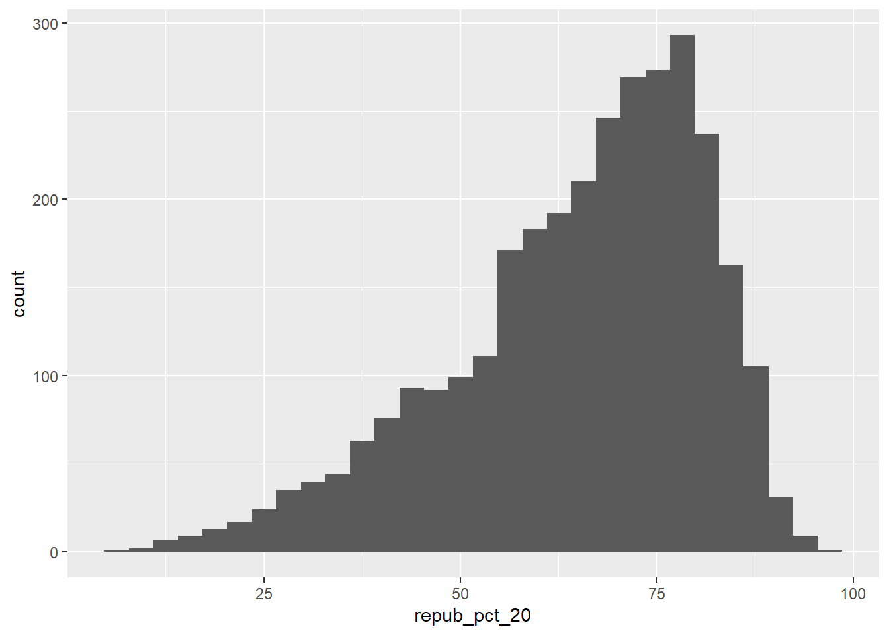
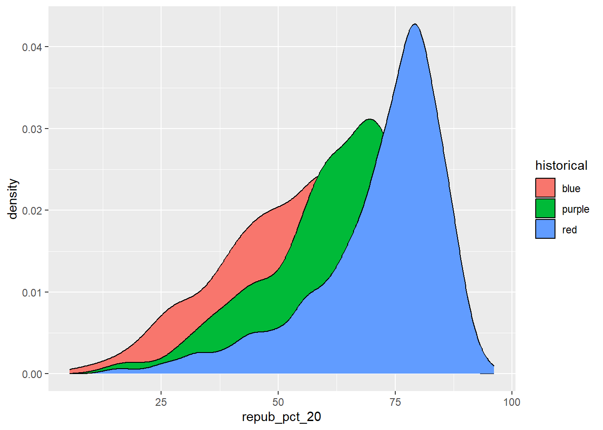
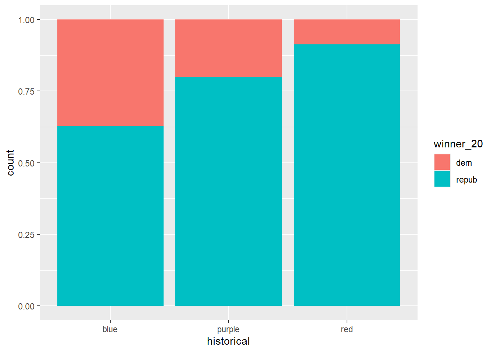

Use this file for practice with the bivariate viz in-class activity. Refer to the class website for details.
Import Data
#Import tidyverselibrary(tidyverse)
── Attaching core tidyverse packages ──────────────────────── tidyverse 2.0.0 ──
✔ dplyr 1.1.4 ✔ readr 2.1.5
✔ forcats 1.0.0 ✔ stringr 1.5.1
✔ ggplot2 3.5.1 ✔ tibble 3.2.1
✔ lubridate 1.9.3 ✔ tidyr 1.3.1
✔ purrr 1.0.2
── Conflicts ────────────────────────────────────────── tidyverse_conflicts() ──
✖ dplyr::filter() masks stats::filter()
✖ dplyr::lag() masks stats::lag()
ℹ Use the conflicted package (<http://conflicted.r-lib.org/>) to force all conflicts to become errors
# Load dataelections <-read.csv("https://mac-stat.github.io/data/election_2020_county.csv")# Check it outhead(elections)
state_name state_abbr historical county_name county_fips total_votes_20
1 Alabama AL red Autauga County 1001 27770
2 Alabama AL red Baldwin County 1003 109679
3 Alabama AL red Barbour County 1005 10518
4 Alabama AL red Bibb County 1007 9595
5 Alabama AL red Blount County 1009 27588
6 Alabama AL red Bullock County 1011 4613
repub_pct_20 dem_pct_20 winner_20 total_votes_16 repub_pct_16 dem_pct_16
1 71.44 27.02 repub 24661 73.44 23.96
2 76.17 22.41 repub 94090 77.35 19.57
3 53.45 45.79 repub 10390 52.27 46.66
4 78.43 20.70 repub 8748 76.97 21.42
5 89.57 9.57 repub 25384 89.85 8.47
6 24.84 74.70 dem 4701 24.23 75.09
winner_16 total_votes_12 repub_pct_12 dem_pct_12 winner_12 total_population
1 repub 23909 72.63 26.58 repub 54907
2 repub 84988 77.39 21.57 repub 187114
3 repub 11459 48.34 51.25 dem 27321
4 repub 8391 73.07 26.22 repub 22754
5 repub 23980 86.49 12.35 repub 57623
6 dem 5318 23.51 76.31 dem 10746
percent_white percent_black percent_asian percent_hispanic per_capita_income
1 76 18 1 2 24571
2 83 9 1 4 26766
3 46 46 0 5 16829
4 75 22 0 2 17427
5 88 1 0 8 20730
6 22 71 0 6 18628
median_rent median_age
1 668 37.5
2 693 41.5
3 382 38.3
4 351 39.4
5 403 39.6
6 276 39.6
Exwercise 0
Part A
Dems won 2020, so a little less than 50% is my guess. Though I could also see it being more like 60-65% since republican counties are on avg less populus than dem counties
ggplot(elections, aes(x=winner_20))+geom_bar()
What was the avg population of the counties that republicans won versus the avg pop of dem counties?
`stat_bin()` using `bins = 30`. Pick better value with `binwidth`.

What is the relationship between repub_pct_20 and the size of the county’
Exercise 1: Quantitative vs Quantitative Intuition Check
elections %>%ggplot(aes(x = repub_pct_16, y = repub_pct_20))+geom_point(alpha =1)
-Exercise 2: 2 Quantitative Variables
# Set up the plotting frame# How does this differ than the frame for our histogram of repub_pct_20 alone?ggplot(elections, aes(y = repub_pct_20, x = repub_pct_16))
#we have a y declaration
# Add a layer of points for each county# Take note of the geom!ggplot(elections, aes(y = repub_pct_20, x = repub_pct_16)) +geom_point()
#adds in the scatterplot points
# Change the shape of the points# What happens if you change the shape to another number?ggplot(elections, aes(y = repub_pct_20, x = repub_pct_16)) +geom_point(shape =4)
#changing the shape number changes the shape of the point
# YOU TRY: Modify the code to make the points "orange"# NOTE: Try to anticipate if "color" or "fill" will be useful here. Then try both.ggplot(elections, aes(y = repub_pct_20, x = repub_pct_16)) +geom_point(color="blue")
# Add a layer that represents each county by the state it's in# Take note of the geom and the info it needs to run!ggplot(elections, aes(y = repub_pct_20, x = repub_pct_16)) +geom_text(aes(label = state_abbr))
Exercise 3: Reflect
The relationship between repub_pct_16 and repub_pct_20 is strong and positive with few outliers. A few notable ones are in Texas, where the repub_pct increased a large amount in the 4 years.
Exercise 4: Visualizing trend
ggplot(elections, aes(y = repub_pct_20, x = repub_pct_16)) +geom_point() +geom_smooth()
`geom_smooth()` using method = 'gam' and formula = 'y ~ s(x, bs = "cs")'
Part A
ggplot(elections, aes(y = repub_pct_20, x = repub_pct_16)) +geom_smooth()
`geom_smooth()` using method = 'gam' and formula = 'y ~ s(x, bs = "cs")'
Part B
ggplot(elections, aes(y = repub_pct_20, x = repub_pct_16)) +geom_point() +geom_smooth(method ="lm")
`geom_smooth()` using formula = 'y ~ x'
Exercise 5: Your Turn
# Scatterplot of repub_pct_20 vs median_rentggplot(elections, aes(y = repub_pct_20, x = median_rent)) +geom_point() +geom_smooth(method ="lm")
`geom_smooth()` using formula = 'y ~ x'
# Scatterplot of repub_pct_20 vs median_ageggplot(elections, aes(y = repub_pct_20, x = median_age)) +geom_point() +geom_smooth(method ="lm")
`geom_smooth()` using formula = 'y ~ x'
For the median rent scatterplot, there is a moderately strong negative relationship between repub_pct_20 and median_rent.
For the median age scatterplot, there is a moderately strong posive relationship between repub_pct_20 and median_age.
Exercise 6: A Sad Scatterplot
ggplot(elections, aes(y = repub_pct_20, x = historical)) +geom_point()
A scatterplot is not the best visualization here, because it fails to effectively show data. Because it compresses all the categorical data into 1 line, it becomes very difficult to see center.
-Exercise 7: Quantitative vs Categorical – Violins & Boxes
It appears that historical red counties centered around a higher repub_pct_20, where as blue counties center around a lower repub_pct_20. Purple counties are in between the two. There appear to be alot of outliers for historical red and purple counties with a couple outiers in historically blue counties as well. Interestingly, there are only outliers with a lower repub_pct_20 value.
Exercise 8: Quantitative vs Categorical – Intuition Check
ggplot(elections, aes(x = repub_pct_20, fill = historical)) +geom_density()
Exercise 9: Quantitative vs Categorical – Density Plots
# Name two "bad" things about this plotggplot(elections, aes(x = repub_pct_20, fill = historical)) +geom_density()

#some of the data covers up other parts of the data. Red is placed in front of the other historical density plots so we cannot see them
# What does scale_fill_manual do?ggplot(elections, aes(x = repub_pct_20, fill = historical)) +geom_density() +scale_fill_manual(values =c("blue", "purple", "red"))
#It fills in the color of each density plot with a specific color
# What does alpha = 0.5 do?# Play around with different values of alpha, between 0 and 1ggplot(elections, aes(x = repub_pct_20, fill = historical)) +geom_density(alpha =0.5) +scale_fill_manual(values =c("blue", "purple", "red"))
#changing alpha changes the opacity of the density plots
# What does facet_wrap do?!ggplot(elections, aes(x = repub_pct_20, fill = historical)) +geom_density() +scale_fill_manual(values =c("blue", "purple", "red")) +facet_wrap(~ historical)
#facet wrap splits the density plots into seperate areas
# Let's try a similar grouping strategy with a histogram instead of density plot.# Why is this terrible?ggplot(elections, aes(x = repub_pct_20, fill = historical)) +geom_histogram(color ="white") +scale_fill_manual(values =c("blue", "purple", "red"))
`stat_bin()` using `bins = 30`. Pick better value with `binwidth`.
#This is terrible because it is hard to read the count for blue and purple, because they are not lined up at 0
Exercise 10
I like density plots the best
Density plots give more accurate knowlege of the shape of the data
Box plots give more accurate knowlege of the center of the data
Exercise 11: Categorical vs Categorical – Intuition Check
# Plot 1: adjust this to recreate the top plotggplot(elections, aes(x = historical,fill = winner_20)) +geom_bar()
# Plot 2: adjust this to recreate the bottom plotggplot(elections, aes(x = winner_20)) +geom_bar() +facet_wrap(~ historical)
Exercise 12: Categorical vs Categorical
# A stacked bar plot# How are the "historical" and "winner_20" variables mapped to the plot, i.e. what roles do they play?ggplot(elections, aes(x = historical, fill = winner_20)) +geom_bar()
#historical describes what each bar contains, where as winner_20 seperates out each bar into a portion for dem and for repub
# A faceted bar plotggplot(elections, aes(x = winner_20)) +geom_bar() +facet_wrap(~ historical)
# A side-by-side bar plot# Note the new argument to geom_barggplot(elections, aes(x = historical, fill = winner_20)) +geom_bar(position ="dodge")
# A proportional bar plot# Note the new argument to geom_barggplot(elections, aes(x = historical, fill = winner_20)) +geom_bar(position ="fill")

Part A
A pro is that it gives a more accurate way to determine the percentage of each historical group winner_20 A con is that it does not give a count of all the counties in each bar
Part B
My favorite is the staked Bar plot. I feel that it gives a good comprimise for displaying the number of counts and the proportion of counts
# How do 3pm temperatures (temp3pm) differ by location?ggplot(weather, aes(x = temp3pm, fill = location)) +geom_density(alpha =0.5)
Warning: Removed 19 rows containing non-finite outside the scale range
(`stat_density()`).
# How might we predict the 3pm temperature (temp3pm) by the 9am temperature (temp9am)?weather %>%ggplot(aes(x = temp9am, y = temp3pm))+geom_point() +geom_smooth(method ="lm", se =FALSE, color ="red")
`geom_smooth()` using formula = 'y ~ x'
Warning: Removed 27 rows containing non-finite outside the scale range
(`stat_smooth()`).
Warning: Removed 27 rows containing missing values or values outside the scale range
(`geom_point()`).
# How do the number of rainy days (raintoday) differ by location?ggplot(weather, aes(x = location, fill = raintoday)) +geom_bar()
Source Code
---title: "Bivariate Viz"---Use this file for practice with the **bivariate viz** in-class activity. Refer to the class website for details.- **Import Data**```{r}#Import tidyverselibrary(tidyverse)# Load dataelections <-read.csv("https://mac-stat.github.io/data/election_2020_county.csv")# Check it outhead(elections)```- **Exwercise 0**> Part ADems won 2020, so a little less than 50% is my guess. Though I could also see it being more like 60-65% since republican counties are on avg less populus than dem counties```{r}ggplot(elections, aes(x=winner_20))+geom_bar()```What was the avg population of the counties that republicans won versus the avg pop of dem counties?> Part B```{r}ggplot(elections, aes(x=repub_pct_20))+geom_histogram()```What is the relationship between repub_pct_20 and the size of the county'- **Exercise 1: Quantitative vs Quantitative Intuition Check**```{r}elections %>%ggplot(aes(x = repub_pct_16, y = repub_pct_20))+geom_point(alpha =1)```-**Exercise 2: 2 Quantitative Variables**```{r}# Set up the plotting frame# How does this differ than the frame for our histogram of repub_pct_20 alone?ggplot(elections, aes(y = repub_pct_20, x = repub_pct_16))#we have a y declaration``````{r}# Add a layer of points for each county# Take note of the geom!ggplot(elections, aes(y = repub_pct_20, x = repub_pct_16)) +geom_point()#adds in the scatterplot points``````{r}# Change the shape of the points# What happens if you change the shape to another number?ggplot(elections, aes(y = repub_pct_20, x = repub_pct_16)) +geom_point(shape =4)#changing the shape number changes the shape of the point``````{r}# YOU TRY: Modify the code to make the points "orange"# NOTE: Try to anticipate if "color" or "fill" will be useful here. Then try both.ggplot(elections, aes(y = repub_pct_20, x = repub_pct_16)) +geom_point(color="blue")``````{r}# Add a layer that represents each county by the state it's in# Take note of the geom and the info it needs to run!ggplot(elections, aes(y = repub_pct_20, x = repub_pct_16)) +geom_text(aes(label = state_abbr))```- **Exercise 3: Reflect**The relationship between repub_pct_16 and repub_pct_20 is strong and positive with few outliers. A few notable ones are in Texas, where the repub_pct increased a large amount in the 4 years. - **Exercise 4: Visualizing trend**```{r}ggplot(elections, aes(y = repub_pct_20, x = repub_pct_16)) +geom_point() +geom_smooth()```> Part A```{r}ggplot(elections, aes(y = repub_pct_20, x = repub_pct_16)) +geom_smooth()```> Part B```{r}ggplot(elections, aes(y = repub_pct_20, x = repub_pct_16)) +geom_point() +geom_smooth(method ="lm")```- **Exercise 5: Your Turn**```{r}# Scatterplot of repub_pct_20 vs median_rentggplot(elections, aes(y = repub_pct_20, x = median_rent)) +geom_point() +geom_smooth(method ="lm")# Scatterplot of repub_pct_20 vs median_ageggplot(elections, aes(y = repub_pct_20, x = median_age)) +geom_point() +geom_smooth(method ="lm")```For the median rent scatterplot, there is a moderately strong negative relationship between repub_pct_20 and median_rent.For the median age scatterplot, there is a moderately strong posive relationship between repub_pct_20 and median_age.- **Exercise 6: A Sad Scatterplot**```{r}ggplot(elections, aes(y = repub_pct_20, x = historical)) +geom_point()```A scatterplot is not the best visualization here, because it fails to effectively show data. Because it compresses all the categorical data into 1 line, it becomes very difficult to see center.-**Exercise 7: Quantitative vs Categorical – Violins & Boxes**```{r}# Side-by-side violin plotsggplot(elections, aes(y = repub_pct_20, x = historical)) +geom_violin()# Side-by-side boxplots (defined below)ggplot(elections, aes(y = repub_pct_20, x = historical)) +geom_boxplot()```It appears that historical red counties centered around a higher repub_pct_20, where as blue counties center around a lower repub_pct_20. Purple counties are in between the two.There appear to be alot of outliers for historical red and purple counties with a couple outiers in historically blue counties as well. Interestingly, there are only outliers with a lower repub_pct_20 value. - **Exercise 8: Quantitative vs Categorical – Intuition Check**```{r}ggplot(elections, aes(x = repub_pct_20, fill = historical)) +geom_density()```- **Exercise 9: Quantitative vs Categorical – Density Plots**```{r}# Name two "bad" things about this plotggplot(elections, aes(x = repub_pct_20, fill = historical)) +geom_density()#some of the data covers up other parts of the data. Red is placed in front of the other historical density plots so we cannot see them``````{r}# What does scale_fill_manual do?ggplot(elections, aes(x = repub_pct_20, fill = historical)) +geom_density() +scale_fill_manual(values =c("blue", "purple", "red"))#It fills in the color of each density plot with a specific color``````{r}# What does alpha = 0.5 do?# Play around with different values of alpha, between 0 and 1ggplot(elections, aes(x = repub_pct_20, fill = historical)) +geom_density(alpha =0.5) +scale_fill_manual(values =c("blue", "purple", "red"))#changing alpha changes the opacity of the density plots``````{r}# What does facet_wrap do?!ggplot(elections, aes(x = repub_pct_20, fill = historical)) +geom_density() +scale_fill_manual(values =c("blue", "purple", "red")) +facet_wrap(~ historical)#facet wrap splits the density plots into seperate areas``````{r}# Let's try a similar grouping strategy with a histogram instead of density plot.# Why is this terrible?ggplot(elections, aes(x = repub_pct_20, fill = historical)) +geom_histogram(color ="white") +scale_fill_manual(values =c("blue", "purple", "red"))#This is terrible because it is hard to read the count for blue and purple, because they are not lined up at 0```- **Exercise 10**I like density plots the bestDensity plots give more accurate knowlege of the shape of the dataBox plots give more accurate knowlege of the center of the data- **Exercise 11: Categorical vs Categorical – Intuition Check**```{r}# Plot 1: adjust this to recreate the top plotggplot(elections, aes(x = historical,fill = winner_20)) +geom_bar()``````{r}# Plot 2: adjust this to recreate the bottom plotggplot(elections, aes(x = winner_20)) +geom_bar() +facet_wrap(~ historical)```- **Exercise 12: Categorical vs Categorical**```{r}# A stacked bar plot# How are the "historical" and "winner_20" variables mapped to the plot, i.e. what roles do they play?ggplot(elections, aes(x = historical, fill = winner_20)) +geom_bar()#historical describes what each bar contains, where as winner_20 seperates out each bar into a portion for dem and for repub``````{r}# A faceted bar plotggplot(elections, aes(x = winner_20)) +geom_bar() +facet_wrap(~ historical)``````{r}# A side-by-side bar plot# Note the new argument to geom_barggplot(elections, aes(x = historical, fill = winner_20)) +geom_bar(position ="dodge")``````{r}# A proportional bar plot# Note the new argument to geom_barggplot(elections, aes(x = historical, fill = winner_20)) +geom_bar(position ="fill")```> Part AA pro is that it gives a more accurate way to determine the percentage of each historical group winner_20A con is that it does not give a count of all the counties in each bar> Part BMy favorite is the staked Bar plot. I feel that it gives a good comprimise for displaying the number of counts and the proportion of counts - **Exercise 13: Practice (now or later)**```{r}weather <-read.csv("https://mac-stat.github.io/data/weather_3_locations.csv")``````{r}# How do 3pm temperatures (temp3pm) differ by location?ggplot(weather, aes(x = temp3pm, fill = location)) +geom_density(alpha =0.5) ``````{r}# How might we predict the 3pm temperature (temp3pm) by the 9am temperature (temp9am)?weather %>%ggplot(aes(x = temp9am, y = temp3pm))+geom_point() +geom_smooth(method ="lm", se =FALSE, color ="red")``````{r}# How do the number of rainy days (raintoday) differ by location?ggplot(weather, aes(x = location, fill = raintoday)) +geom_bar()```